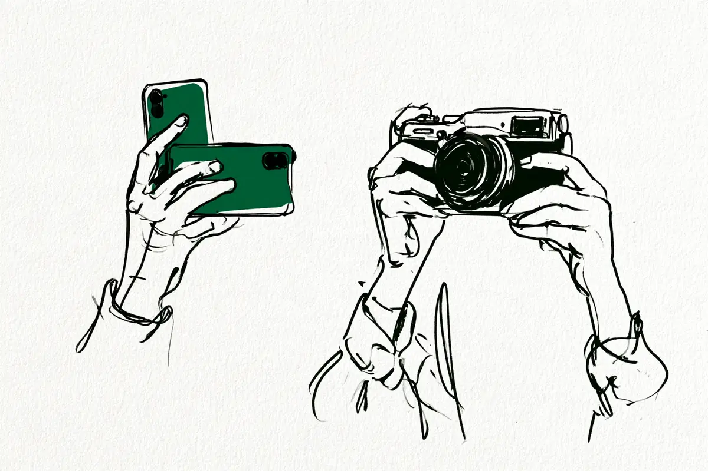
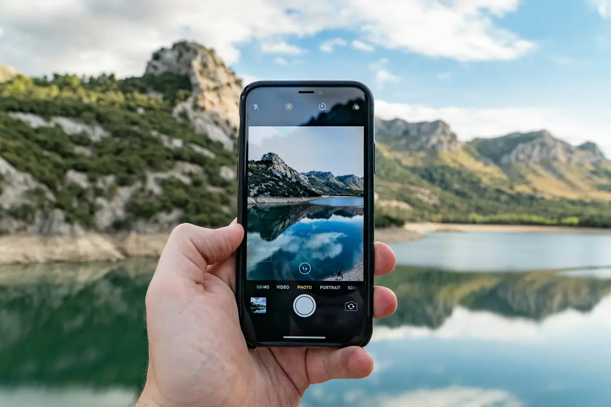

この記事には広告(アフィリエイトリンク)が含まれます。
現在地: 買う前に迷ってる
スマホで十分、一眼はいらない?カメラで差が出やすい3つの場面

ふだんの写真ならスマホで足りる、という声は、カメラを使ってきた人からも出ていました。カメラで差が出やすいのは暗い・遠い・ぼかすの3つの場面で、ここはカメラとスマホのメーカーが仕組みを説明しています。
一眼(レンズを付け替えられるカメラ。一眼レフとミラーレスの両方)がいるかどうかは、この3つで困った覚えがあるかで決まる、というのが私の見立てです。
センサーの大きさ、大きいと何が変わるか、計算で作る写真、遠くを撮るときのズームの順に見て、買う前の3つの質問と困りごと別の早見表にまとめます。4人の声は、その後ろに置きました。
私はカメラを持っていないので、メーカーの公式ページを中心に、4人の声を突き合わせました。
一眼とスマホの違いは、まずセンサーの大きさ
いちばん大きな違いは、センサー(カメラの中で光を受け止める板)の大きさです。先に、1/1.3型や1インチという呼び方の読み方だけ。この数字は実際の寸法ではなく昔のビデオカメラの部品の直径に由来する呼び方で、1型でも対角線は1インチに届きません(ITmediaの説明、荻窪圭さん)。型とインチは同じ呼び方で、分母が大きいほど小さい、とだけ覚えておけば足ります。
カメラ側の寸法は図のとおりで、ソニーとOM SYSTEMの公式仕様の値です。キヤノンのAPS-CはEOS R50で約22.3×14.9mmと少し小さめ。大きい順に、フルサイズ、APS-C、マイクロフォーサーズ、と並びます。
スマホのほうは型名だけの公表で、2026年10月時点で、メインカメラの公式の値はこうでした。
- Google Pixel 11 Pro(2026年)・Pixel 10 Pro(2025年): 1/1.3インチ。Pixel 10(2025年)は1/2インチ(ヘルプ・ストア)
- ソニー Xperia 1 VIII(2026年): 1/1.35型(仕様)
- シャープ AQUOS R10(2025年): 1/1.55インチ(ニュースリリース)。AQUOS R8 pro(2023年): 1インチ(ニュースリリース)
- Apple iPhone 18 Pro・17: 非公開(18 Pro・17の仕様ページに記載なし)
上位機のメインカメラは1/1.55〜1/1.3型前後で、同じメーカーでも標準機は小さめです。自分のスマホの仕様ページで、イメージセンサーのサイズを探してみてください(Appleは非公開です)。
公式の寸法だけで出した、控えめな目安です。1型(RX100 VIIの13.2×8.8mm)に比べて、APS-C(α6400)は面積で約3.2倍、フルサイズ(α7 IV)は約7.4倍です。計算は私の整理です。1/1.3型などは型の数字の上で1型より小さいので、スマホとの差はこれ以上になります。
ソニーのαの解説ページにあるスマホの数字は、いまの上位機とは前提が違います。
一般的なスマートフォンに搭載されているセンサーは、1/2.3型が主流です。
同じページの約13倍(APS-C)・約30倍(フルサイズ)という面積の比は、この1/2.3型を前提にした計算です(ソニーの解説)。1/1.3型前後の上位機に当てはめると、差を大きく見積もることになります。
センサーが大きいと、何が変わる?
公式の説明で言えるのは3つです。
1つ目は暗い場所のノイズ(写真のザラザラ)です。センサーが大きいほど多くの光を取り込め、ノイズを抑えやすい、というのがソニーの解説です。ただしこれは傾向で、世代や画像の処理で差が縮まることがあります。
2つ目はボケ(ピントが合っていないところがにじむこと)です。ここは条件つきで、ソニーはAPS-Cについてこう書いています。
同じ範囲を写す場合、35mmフルサイズセンサーより、ぼけ量が少なくなる
同じ範囲を写す場合、という条件が大事です。ボケの大きさは、F値(レンズの光の通り道の広さを表す数字)、焦点距離(写す範囲の広さを決める数字)、被写体や背景との距離でも変わります。
3つ目は大きさと重さです。センサーが大きいとレンズも大きくなりがちで、本体の重さも変わる、と同じページにあります。
スマホを作っているGoogleも、2019年のPixel 3の説明会で、一眼との違いを大きなレンズとセンサーの大きさだとしていました。説明会を伝えたImpress Watchの記事は、Googleの説明をこうまとめています。
一眼のメリットは、「ズーム」、「暗い場所での画質」、「ボケ味」
2019年の話なので、いまのPixelも同じ考えかは分かりません。この記事の暗い・遠い・ぼかすは、この3つをやさしく言い直したものです。
スマホは、計算で写真を作っている

センサーは小さいのに夜景やボケがきれいに見える理由を、メーカーの説明(公式ページと説明会の記事)で読むと、答えは複数枚の合成とデータ処理でした。
Googleの夜景モードは、何枚も連写して合成し、画像を平均化してノイズを減らす仕組みです(説明会の記事)。Google自身の言い方では、こうです。
暗いながらも鮮明な写真を複数連写することにより一定の量の光を捉えます。
ボケも同じで、Pixel 3の説明では、ポートレートモードは人と背景を分けて、人以外をデジタル処理でぼかします。
ポートレートモードは、デジタル一眼で実現される「レンズボケ」を、データ処理を使って実現するもの。
Appleも、ポートレートモードはカメラが被写界深度(ピントが合って見える奥行きの幅)のエフェクトを作る、とサポートページにあります。撮ったあとに写真アプリでぼかしの度合いを変えられる、ともユーザガイドに載っています。レンズのボケは、撮るときに決まります。
ソニーのXperia 1 VIII(2026年)は、全部のレンズで重ね合わせ処理をRAWの段階で行う、とニュースリリースにあります。RAWは、あとで自分で仕上げるための生のデータです(言葉の意味)。この処理は静止画だけで、連写やRAW記録のときは使えない場合がある、と脚注にあります。
同じリリースで、ソニーはXperia 1 VIIIの暗所性能をフルサイズセンサー並みとしています。これはソニー自身の主張で、ソニー製のフルサイズ機との比較、かなり暗い場所(LV2以下)、静止画のノイズとダイナミックレンジ(明暗の幅)という3つの条件付きです。条件を外して、スマホは一眼並み、とは言えません。
合成や処理で作ったボケや夜景が悪い、という話ではありません。どこまで自然に見えるかは、機種・場面・見る人で変わります。この記事は仕組みの違いを並べているだけで、どちらがきれいかは判定していません。
遠くを撮るとき: スマホのズームと一眼のレンズの違い
遠い場面の差は、ズームの仕組みです。光学ズームは、レンズで大きく写すので画質の劣化がほとんどありません。デジタルズームは、写した画像の一部を切り抜いて拡大します(Googleストアの説明も同じです)。足りない分は周りの画素(画像を作る細かい点)から推定して埋めるため、ソニーのサポートページは劣化の理由をこう書いています。
この信号は周囲の画素からの推定によって得られるため、倍率を上げるほど推定する信号の数が多くなり画質が劣化します。
メーカーによって、光学ズームに含める範囲も違います。Appleは光学ズームと光学品質ズームを書き分けています。iPhone 18 Proの仕様では、望遠(遠くを大きく写すカメラ)が100mm(4倍)、8倍は光学品質ズームです。光学品質のほうは、2022年のiPhone 14 Proの発表では、センサーの中央部分だけを使う方式でした。一方Googleは、Pixel 11 Proのハードウェア仕様で、望遠カメラの5倍だけでなく2倍や10倍も光学ズームと表記しています。同じ光学◯倍でも、中身は同じとは限りません。
その先は、デジタルズームに生成AIの補完を足す方式があります。Pixel 10 Proの超解像ズームPro(最大100倍)は、拡大した写真の細部を生成AIで高精細化する、とGoogleのストアの記事にあります。自社の販促記事なので、仕組みの説明だけを使いました。
一眼は、レンズを替えて焦点距離を選びます。遠いものを大きく写す手段が、切り抜きではなくレンズ側にある、という違いです。
スマホでもできること(RAW・手動設定)、公式の比較がないこと(動くもの)
一眼だけができる、と思われがちなことも、調べると機種しだいでした。
RAWで記録できる形式は、スマホにもあります。iPhone 18 Proの仕様にはProRAWとDNGの記録があり、絞り・シャッタースピード・色味(ホワイトバランス)などの手動の操作も載っています。Pixel 11 Proにもプロ設定があります(ハードウェア仕様)。RAWは一眼だけ、スマホは手動設定できない、とは言えません。ただし機種によるので、自分のスマホの仕様で確かめてください。
一方で、動くものを撮る場面は、カメラとスマホの公式の比較が見つかりませんでした。声として出てきたのは、あとで紹介する知恵袋の回答者のライブハウスと薄暗い体育館で、暗い場所と動く相手が重なる場面です。
一眼はいらない?買う前に自分に聞く3つの質問
ここまでを、自分で答えられる質問にします。
1. スマホで困った場面が浮かぶ? いつ、何を撮って、どう困ったか。浮かばないなら、今はスマホで十分かもしれません。カメラ趣味はやめとけ?の記事では、体験談8件中4件がスマホで十分を理由に挙げていました。
2. それは暗い・遠い・ぼかす? 生活の場面にすると、暗いは室内の子ども・夜景・ライブ。遠いは運動会・ステージ・野鳥。ぼかすは人や料理を背景から浮かせたいとき、あたりです。同じ暗さなら、センサーが大きいほうがザラザラは抑えやすい傾向です。ただ、光が足りなければカメラでもブレやザラザラは出ます。その仕組みは暗いところで撮れないにまとめています。動くものと写りの好みは声の範囲なので、自分の目で確かめる段階に進みます(次の表)。
3. その日に持ち出せる? 重さと大きさは、買って後悔した人の声に出てきた理由で、一眼レフを買ったけど後悔にまとめています。持ち出せそうにないなら、軽い機種や今のスマホの設定から始める手もあります。
困りごと別の早見表
| 困りごと | スマホでできること | スマホを替えると変わるか | カメラで変わる理由 | 無料で確かめる方法 |
|---|---|---|---|---|
| 暗い(室内の子ども・夜景・ライブ) | 夜景モード(Pixelは複数枚を合成。仕組みは機種による) | センサーの大きい上位機なら変わる余地。差は型名からの目安 | 大きいほど光を多く取り込める傾向(ソニー)。光が足りなければカメラでもブレる | 今のスマホの夜景モードで同じ場面を撮る。暗いところで撮れないを読む |
| 遠い(運動会・ステージ・野鳥) | 望遠カメラがある機種は光学ズーム。その先はデジタル | 望遠付きの上位機なら変わる。光学の倍率は機種で確認 | レンズを替えて焦点距離を選べる。切り抜きではない | 店頭で望遠レンズを付けた大きさと重さを見る。撮り比べ記事を見る |
| ぼかす(人や料理を浮かせたい) | ポートレートモード(処理でぼかす。あとから変えられる機種も) | 処理のしかたは機種ごとに違う | 同じ範囲を写すなら大きいほどぼけやすい(ソニー)。レンズのボケは撮るときに決まる | ポートレートモードの写真を拡大して境目を見る |
| 動くもの(声の範囲) | 連写は機種による | この記事の範囲では言えない | 公式の説明なし。知恵袋の観察(ライブハウス・薄暗い体育館)のみ | 撮り比べ記事を見る。借りて同じ場面で撮る |
| 写りの好み(声の範囲) | フィルター、RAW(機種による) | この記事の範囲では言えない | 公式の説明なし。とっとさんの空気感は本人の感じ方 | 撮り比べ記事を見る。借りて同じ場面で撮る |
表の3列目は、望遠付きやセンサーの大きい上位機への買い替えのことです。一眼のほかに、1型のコンパクトカメラ(RX100 VIIで13.2×8.8mm)という中間の選択肢もあります。
4人の声: スマホで十分と言う人、一眼との違いを感じた人
同じスマホで十分でも、言っている人の立場はけっこう違います。4人とも、1人ずつの例です。
以前は一眼レフ(鏡を使ってのぞくタイプのカメラ。言葉の意味)に凝っていた、おじさんの戯言猫付きのcholariさんは、重さと手動の設定の面倒さを理由に挙げています。
今では、スマホカメラ一択です。
カメラどうしの性能比較ではなく、いまのスマホと自分の一眼レフの腕との比較なんですよね。
両方を使っている人の例が、urouro.blogのisofssさん(Amazon・楽天で商品の紹介もしているサイトです)です。ニコンの最上位機で毎日撮っていた人が、iPhone 15 Proも使い始めました。
カメラなんてスマホで十分です。(※状況によります)
日常のスナップ(気負わずに撮る写真)ならスマホは心強く、何かを表現したり伝えたりする写真だと足りない、という分け方でした。最上位機で毎日撮るほど撮る量の多い方なので、1人の例として読んでください。
noteのとっとさん(カメラのハウツーブログも運営している方です)は、子どもが生まれてから一眼を買った人で、記事の見出しの前半がこれです。
「スマホで十分」は、間違ってなかった。
見出しはこのあと、けれど、と続き、一眼で感じた違いの話になります。きっかけは、スマホの写真が全部似て見えたこと。違いは性能より空気感だ、というのはこの方の感じ方で、いまもスマホを日常的に使っていると明記しています。写りの好みを声の範囲に置いたのは、この話が理由です。
もう1人は、Yahoo!知恵袋で、iPhoneで十分とよく聞くという相談に答えた人です。地下アイドルのライブによく行く方で、どんな場面でどう撮りたいかしだい、と前置きしたうえで、周りの様子を挙げています。ライブハウスで撮るとスマホが使い物にならないと分かって、一眼を買う人と撮影をあきらめる人に分かれる、という観察です。薄暗い体育館でスポーツを撮るとブレる、とも添えていました。結びはこうです。
スマホで問題がなければスマホ。不満があれば一眼を買えば良い。
4人とも、どこで困ったか(困らなかったか)が先にあって、答えが後に来ています。
迷ったら1週間メモしてみる
質問1に答えられないなら、答えが出るまで待つ方法があります。この節の方法は、読んだ記事の中にはなく、どれも私からの提案です。
- 今のスマホで撮って困った瞬間を、1週間メモする。暗い店で子どもがブレた、運動会で遠かった、のように場面と理由だけ
- 1週間たって1つも書けなければ、質問1の答えは浮かばない。書けたら、暗い・遠い・ぼかすのどれに当たるかを見る
- 夜景モードや、RAW・手動設定(ある機種なら)も先に試し、それでも困ったことだけ数える
撮り比べを自分の目で見たいなら、Yahoo!ニュース エキスパートのAkiさんの食べ物写真の撮り比べがあります。メディアの記事で、結論はスマホでも撮れる、でも一眼ならもっと楽しい、でした。
メモに場面が書けたら、次は店頭です。大きさと重さは、ここで確かめられます。
それでも分からない場面があるなら、借りてその場面で撮る方法もあります。借りて分かるのは重さ・構えやすさ・その場面での写りで、続くかどうかは分かりにくいです。
PRAPEXレンタル詳しく見るレンタルの会社によって、条件や対象の機材は違います。利用する前に、それぞれの公式サイトで条件を確認してください。
おわりに
困った場面が浮かばないうちは、今のスマホで撮り続ければいいと思います。浮かんだら、そのメモがカメラを選ぶ手がかりになります。
この記事で読んだ27件
カメラ・スマホのメーカーの公式ページ
- ソニー α7 IV「仕様表」(センサー寸法)
- ソニー α6400「仕様表」(センサー寸法)
- キヤノン EOS R50「仕様」(センサー寸法)
- OM SYSTEM「OM-1 主な仕様」(センサー寸法)
- ソニー RX100 VII「仕様表」(センサー寸法)
- ソニー「センサーサイズの違いを知って、αを使いこなそう」(センサーの大きさで変わること。スマホの欄は1/2.3型前提)
- ソニー サポート「光学ズームとデジタルズームの違いは何ですか?」(ズームの仕組み)
- Googleストア「Google Pixel 10 Pro と Pixel 10 Pro XL の仕様」(センサー)
- Google Pixel ヘルプ「Google Pixel のハードウェア仕様」(センサー・光学ズーム・プロ設定)
- Google Japan Blog「Google Pixel の夜景モードで暗い場所を明るく撮影」(夜景モードの仕組み、2018年)
- Googleストア「Google Pixel スマホ史上最長の100倍ズーム、超解像ズーム Pro」(自社の販促記事。仕組みの説明だけを使用、2025年)
- ソニー Xperia 1 VIII「仕様」(センサー)
- ソニー ニュースリリース「“上手に撮りたい”人を後押し…『Xperia 1 VIII』発売」(重ね合わせ処理・暗所性能の条件、2026年)
- シャープ ニュースリリース「スマートフォン「AQUOS R10」を商品化」(センサー、2025年)
- シャープ ニュースリリース「スマートフォン「AQUOS R8 pro」を商品化」(センサー、2023年)
- Apple「iPhone 18 ProとiPhone 18 Pro Max - 仕様」(センサー非公開・ズーム・RAW・手動操作)
- Apple「iPhone 17 - 仕様」(センサー非公開)
- Apple Newsroom「iPhone 14 ProとiPhone 14 Pro Max…」(光学品質ズームの仕組み、2022年)
- Apple サポート「iPhone でポートレートモードを使う」(被写界深度エフェクト)
- Apple iPhoneユーザガイド「iPhoneでポートレートモードの写真を編集する」(撮影後の調整)
メディアの記事
- Impress Watch「Pixel 3の超解像や夜景モードなど、データ処理で一眼に迫るGoogleの写真技術」(臼田勤哉)(Googleの説明会の記事、2019年)
- ITmedia Mobile「カメラの「1型センサー」は1インチではない?型/インチにまつわる意外な事実」(荻窪圭)(「型」の由来、2023年)
- Yahoo!ニュース エキスパート(Aki)「スマホ vs 一眼カメラ!食べ物写真を撮り比べたらこうなった」(撮り比べ、2025年)
個人の声
- おじさんの戯言猫付き(cholari)「見てはいけないスマホの自分?」(立場: 一眼レフをやめてスマホだけ、2024年)
- urouro.blog(isofss)「機材ヲタクが一眼カメラとiPhoneカメラを使い比べてみた感想。」(立場: 両方を使っている、2024年。Amazon・楽天で商品の紹介もしているサイト)
- note(とっと)「スマホじゃダメなの?——一眼カメラとの違いを感じた瞬間」(立場: スマホで十分と思っていたが一眼を買い、いまも両方使う、2025年。カメラのハウツーブログも運営)
- Yahoo!知恵袋「一眼レフについてです。一眼を買うなら新しく出ているiPhoneで十分とよく聞きます。…」(立場: 回答者はライブ撮影の観察、2022年)
引用は2026-10-02時点で各ページを閲覧して確認しました。